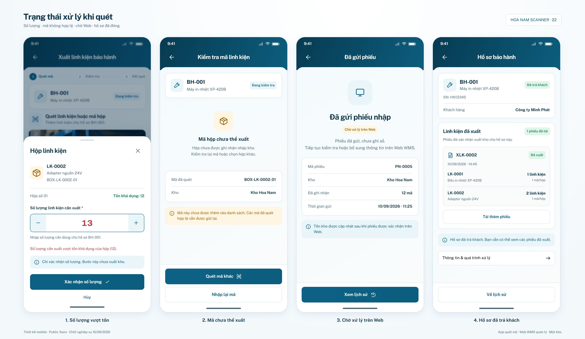
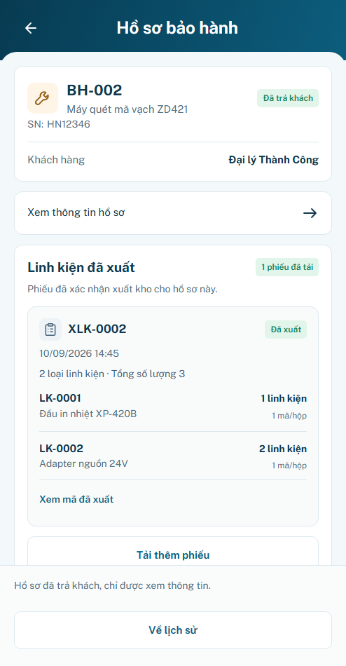

P24 · Trạng thái Scanner
r01 · Chờ review hình thức
Bốn panel · 165 test logic · 56 nhóm trình duyệt · 25 tổ hợp layout · 4 viewport footer. Kết quả prototype; backend/thiết bị/lưu bền chưa xác minh.
Đăng nhập minhanh / preview → xác nhận phiên → công cụ P24 ngoài khung app. P23 r03 đã tạm chốt; state đồng bộ bổ sung sau. Bấm ảnh để xem kích thước gốc. Trước–sau dùng cùng viewport/DPR1/font local; B24 bên dưới là ảnh tham chiếu, không phải UI render.
Baseline B24 do user cung cấp

Giữ khung494×950 và component hiện hành. Không đóng BH-001 hoặc đổi mã phiếu để làm giống ảnh. S03 giữ các lối thao tác có sẵn của owner; S04 chính dùng BH-002/XLK-0003 đúng nguồn P09.
S02 · Mã hộp chưa thể xuất
Mẫu B24 riêng — hai biến thể S03
Opt-in ngoài app. PN-0005 thực sự record12 mã khác nhau; PX-0004 record10 mã. Nguồn mặc định P04 vẫn12 lượt/11 mã; không cộng mã trùng. Mở mẫu tải lại trang và mất dữ liệu thử đang giữ trong bộ nhớ.
Mở mẫu B24 nhập/xuất
S04 — mẫu có trang tiếp theo
Fixture P20 riêng để kiểm tải thêm/chống trùng trong case đóng; không đưa các phiếu mẫu này vào ledger P09. Hồ sơ mặc định chỉ có một phiếu đã xuất và hiển thị Đã tải hết.
